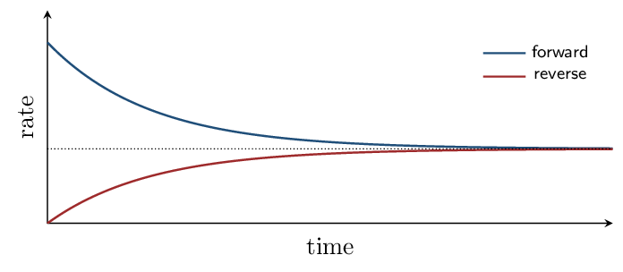

Chapter 13 covers CED 7.1–7.10 in the textbook's own order — about 80% of Unit 7, with nothing off-syllabus.
The two topics it does not contain are 7.11 solubility equilibria (\(K_{sp}\)) and 7.12 the common-ion effect, which live in Zumdahl §16.1 and §15.1. Plan to pick those up separately.
One connection worth making explicitly: the ICE tables in Block 4 are the BCA tables from Chapter 3 with new labels. Before/Change/After becomes Initial/Change/Equilibrium, and the change row is still driven by coefficient ratios. The only new idea is that the reaction stops partway instead of running to completion.The Equilibrium Condition Zumdahl §13.1
- Describe chemical equilibrium as a dynamic condition.
- Explain why concentrations become constant but not equal.
Read: Zumdahl §13.1 • PDF pp. 651–654
- Rate law for the elementary step \(\ce{A + B -> C}\): \(k[\ce{A}][\ce{B}]\)
- Does a catalyst change \(\Delta H\)? no
- Balance: \(\ce{N2 + H2 -> NH3}\): \(\ce{N2 + 3 H2 -> 2 NH3}\)
INSTRUCTION A • What equilibrium actually is 25 min
Dynamic, not static ZUM §13.1
SP 1Start with pure reactants. The forward reaction begins fast and slows as reactants are consumed. Products accumulate, so the reverse reaction speeds up. Eventually the two rates become equal, and from that moment the concentrations stop changing.

Equilibrium is dynamic, not static. Both reactions continue at full speed — they simply cancel out. Nothing has stopped; the traffic in both directions is merely balanced.
And “constant” does not mean “equal.” Concentrations of reactants and products settle at values that are typically very different from one another. Saying “at equilibrium the concentrations are equal” is the single most common error in this unit.
GUIDED PRACTICE • True or false, with reasons 15 min
- At equilibrium, the forward reaction stops. False — both continue at equal rates
- At equilibrium, concentrations are constant. True
- At equilibrium, \([\text{reactants}] = [\text{products}]\). False — constant, not equal
- Equilibrium can be reached from either direction. True
INSTRUCTION B • Approaching from either side 20 min
The same destination ZUM §13.1
SP 4A crucial property: for a given temperature, starting with pure reactants or with pure products leads to the same equilibrium condition. Only the route differs.
This is why equilibrium is described by a constant rather than a procedure. The system does not remember how it got there — which is the same path-independence you met with state functions in Chapter 6.
APPLICATION • Reasoning about the approach 20 min
- Sketch how \([\ce{N2}]\), \([\ce{H2}]\), and \([\ce{NH3}]\) change over
time starting from pure \(\ce{N2}\) and \(\ce{H2}\), and mark where
equilibrium is reached.
\(\ce{N2}\) and \(\ce{H2}\) fall (H2 three times as steeply), \(\ce{NH3}\) rises from zero; all three level off and stay constant thereafter at unequal values.
- A sealed flask of \(\ce{N2O4}\) is left until no further colour change occurs, yet a chemist insists both reactions are still running. How could that be demonstrated?
Explain the difference between saying concentrations are “constant” and saying they are “equal” at equilibrium.
The Equilibrium Constant Zumdahl §13.2–13.3
- Write \(K\) expressions from balanced equations.
- Convert between \(K_c\) and \(K_p\).
Read: Zumdahl §13.2–13.3 • PDF pp. 654–660
- At equilibrium the two rates are: equal
- Is equilibrium static or dynamic? dynamic
- \(R\) in L·atm/mol/K: 0.08206
INSTRUCTION A • The law of mass action 25 min
Writing \(K\) ZUM §13.2
SP 5 For the general reaction \(j\ce{A} + k\ce{B} \rightleftharpoons l\ce{C} + m\ce{D}\):Here the coefficients do become exponents — unlike rate laws in Chapter 12, where they never do. The difference is that \(K\) describes a thermodynamic end state determined by the overall equation, while a rate law describes a mechanism. Two different questions, two different rules.
Manipulating \(K\)
| If you… | then the new constant is… |
|---|---|
| reverse the reaction | \(1/K\) |
| multiply coefficients by \(n\) | \(K^n\) |
| add two reactions | \(K_1 \times K_2\) |
GUIDED PRACTICE • Write the expressions 15 min
- \(\ce{N2(g) + 3 H2(g) <=> 2 NH3(g)}\): \([\ce{NH3}]^2/([\ce{N2}][\ce{H2}]^3)\)
- \(\ce{2 SO2(g) + O2(g) <=> 2 SO3(g)}\): \([\ce{SO3}]^2/([\ce{SO2}]^2[\ce{O2}])\)
- If \(K = 4.0\) for a reaction, \(K\) for the reverse is: 0.25
INSTRUCTION B • \(K_p\) and \(K_c\) 20 min
Equilibrium in terms of pressure ZUM §13.3
SP 5For gases it is often easier to measure pressure than concentration, so \(K_p\) uses partial pressures in place of molar concentrations.
Since \(C = P/RT\) for an ideal gas, substituting givesFor \(\ce{H2(g) + F2(g) <=> 2 HF(g)}\): two moles of gas on each side, so \(\Delta n = 0\) and \((RT)^0 = 1\). Therefore \[ K_p = K_c \] Zumdahl works the substitution explicitly — every \(RT\) term cancels. Whenever the gas-mole totals match, the two constants are identical.
For \(\ce{N2O4(g) <=> 2 NO2(g)}\) at 25 °C, \(K_c = 4.6\times10^{-3}\). Here \(\Delta n = 2 - 1 = 1\): \[ K_p = K_c(RT)^1 = (4.6\times10^{-3})(0.08206)(298) = 0.11 \] The two differ by a factor of \(RT \approx 24.5\) — large enough that quoting the wrong one is a serious error.
APPLICATION • Conversions 20 min
- For \(\ce{N2(g) + 3 H2(g) <=> 2 NH3(g)}\), find \(\Delta n\) and write the relationship between \(K_p\) and \(K_c\).
- For \(\ce{2 SO2(g) + O2(g) <=> 2 SO3(g)}\) at 700 K,
\(K_c = 4.3\times10^{6}\). Calculate \(K_p\).
\(\Delta n = 2-3 = -1\); \(K_p = (4.3\times10^{6})(0.08206 \times 700)^{-1} = 4.3\times10^{6}/57.4 = 7.5\times10^{4}\)
For which type of reaction does \(K_p = K_c\)? Give an example.
Heterogeneous Equilibria, Magnitude of \(K\), and \(Q\) Zumdahl §13.4–13.5
- Write \(K\) for heterogeneous equilibria.
- Interpret the magnitude of \(K\), and use \(Q\) to predict direction.
Read: Zumdahl §13.4–13.5 • PDF pp. 660–671
- \(K\) expression for \(\ce{2 A <=> B}\): \([\ce{B}]/[\ce{A}]^2\)
- \(\Delta n\) for \(\ce{2 NO2 <=> N2O4}\): \(-1\)
- If \(K = 100\), \(K\) for the reverse is: 0.010
- Do equilibrium constants carry units? no
INSTRUCTION A • Leaving things out 25 min
Heterogeneous equilibria ZUM §13.4
SP 6When a reaction involves more than one phase, pure solids and pure liquids are omitted from the \(K\) expression.
The reason is not arbitrary: the “concentration” of a pure condensed phase is fixed by its density, which does not change as the reaction proceeds. Adding more solid does not make it more concentrated — it just makes the pile bigger.
GUIDED PRACTICE • Write heterogeneous expressions 15 min
- \(\ce{2 H2O(l) <=> 2 H2(g) + O2(g)}\): \(K = [\ce{H2}]^2[\ce{O2}]\)
- \(\ce{C(s) + CO2(g) <=> 2 CO(g)}\): \(K = [\ce{CO}]^2/[\ce{CO2}]\)
- \(\ce{NH4Cl(s) <=> NH3(g) + HCl(g)}\): \(K = [\ce{NH3}][\ce{HCl}]\)
INSTRUCTION B • What \(K\) tells you — and what it does not 20 min
The extent of reaction ZUM §13.5
SP 6| Magnitude | At equilibrium | Position |
|---|---|---|
| \(K \gg 1\) | mostly products | lies far to the right |
| \(K \approx 1\) | appreciable amounts of both | near the middle |
| \(K \ll 1\) | mostly reactants | lies far to the left |
Zumdahl is explicit about this and it is a favourite exam trap: the size of \(K\) says nothing about how fast equilibrium is reached. Extent is thermodynamics; speed is kinetics, governed by \(E_a\). A reaction with \(K = 10^{20}\) can take centuries — diamond turning to graphite is exactly that case.
The reaction quotient
\(Q\) has the identical algebraic form as \(K\), but uses whatever concentrations you have right now, equilibrium or not. Comparing them predicts which way the system must move:| Comparison | Meaning | Shift |
|---|---|---|
| \(Q < K\) | too few products | toward products (right) |
| \(Q = K\) | at equilibrium | no shift |
| \(Q > K\) | too many products | toward reactants (left) |
APPLICATION • Using \(Q\) 20 min
For \(\ce{H2(g) + I2(g) <=> 2 HI(g)}\), \(K = 50.0\) at a given temperature.
- A flask contains all three at 1.0 M. Compute \(Q\) and
predict the direction of change.
\(Q = (1.0)^2/[(1.0)(1.0)] = 1.0\). \(Q < K\), so the reaction proceeds to the right.
- Another flask has \([\ce{HI}] = 2.0\,\mathrm{M}\),
\([\ce{H2}] = [\ce{I2}] = 0.010\,\mathrm{M}\). Compute \(Q\) and
predict.
\(Q = (2.0)^2/[(0.010)(0.010)] = 4.0\times10^{4}\). \(Q > K\), so the reaction proceeds to the left.
- Explain why \(Q\) is useful even though it is not a new equation.
A reaction has \(K = 3\times10^{15}\) yet no product forms in a laboratory over several hours. Explain how both facts can be true.
Solving Equilibrium Problems Zumdahl §13.6
- Build and complete an ICE table.
- Solve for equilibrium concentrations, including by approximation.
Read: Zumdahl §13.6 • PDF pp. 671–676
- If \(Q < K\), the reaction shifts: right
- \(K\) expression for \(\ce{CaCO3(s) <=> CaO(s) + CO2(g)}\): \(K_p = P_{\ce{CO2}}\)
- Does a large \(K\) mean a fast reaction? no
INSTRUCTION A • The ICE table 25 min
BCA tables, one chapter later ZUM §13.6
SP 5The tool is the Chapter 3 BCA table with new labels: Initial, Change, Equilibrium. As before, the change row is set by the coefficient ratios; the only new feature is that the reaction stops partway, so the change is an unknown \(x\) rather than a known quantity.
| \(\ce{N2O4}\) | \(\rightleftharpoons\) | \(\ce{2 NO2}\) | |
|---|---|---|---|
| Initial | 1.00 | 0 | |
| Change | \(-x\) | \(+2x\) | |
| Equilibrium | \(1.00-x\) | \(2x\) |
The approximation is only legal when \(x\) is small compared with the initial concentration — roughly when \(K\) is small. Always run the 5% check. If \(x\) exceeds 5% of the initial value, discard the approximation and solve the quadratic properly.
GUIDED PRACTICE • Set up the table 15 min
For \(\ce{2 SO2 + O2 <=> 2 SO3}\) starting with 2.0 M \(\ce{SO2}\), 1.0 M \(\ce{O2}\), no \(\ce{SO3}\), write the equilibrium row.
INSTRUCTION B • When you must use the quadratic 20 min
Zumdahl's hydrogen fluoride problem ZUM §13.6
SP 5ICE gives \([\ce{H2}] = 1.000-x\), \([\ce{F2}] = 2.000-x\), \([\ce{HF}] = 2x\): \[ \frac{(2x)^2}{(1.000-x)(2.000-x)} = 115 \] \(K\) is large, so \(x\) will not be small — the approximation is unavailable. Expanding gives \[ 111x^2 - 345x + 230 = 0 \qquad\Rightarrow\qquad x = 0.968 \ \text{ or } \ 2.140 \] Reject \(x = 2.140\): subtracting it from 1.000 M would give a negative concentration of \(\ce{H2}\), which is physically impossible. So \[ [\ce{H2}] = 0.032\,\mathrm{M},\quad [\ce{F2}] = 1.032\,\mathrm{M},\quad [\ce{HF}] = 1.936\,\mathrm{M} \] Reality check: substituting back gives \((1.936)^2/[(0.032)(1.032)] = 1.13\times10^{2}\), agreeing with the given \(1.15\times10^{2}\) to within rounding. ✓
Two habits from that example are worth keeping. First, a quadratic always gives two roots and one is normally physically impossible — reject it by checking for negative concentrations, not by preference. Second, always substitute your answer back into the \(K\) expression. It takes ten seconds and catches nearly every arithmetic slip.
APPLICATION • Full problem 20 min
\(\ce{H2(g) + I2(g) <=> 2 HI(g)}\) has \(K = 50.0\). A flask initially contains 1.00 M \(\ce{H2}\) and 1.00 M \(\ce{I2}\).- Build the ICE table.
- Solve for \(x\). (This one is a perfect square — take the square
root of both sides.)
\((2x)^2/(1.00-x)^2 = 50.0\); \(2x/(1.00-x) = 7.071\); \(2x = 7.071 - 7.071x\); \(9.071x = 7.071\); \(x = 0.779\)
- State all three equilibrium concentrations and check them against
\(K\).
\([\ce{H2}] = [\ce{I2}] = 0.221\,\mathrm{M}\); \([\ce{HI}] = 1.558\,\mathrm{M}\). Check: \((1.558)^2/(0.221)^2 = 49.7 \approx 50.0\) ✓
When is it safe to assume \(x\) is negligible, and how do you confirm it?
Le Ch\^atelier's Principle Zumdahl §13.7
- Predict the direction of shift for concentration, volume, and temperature changes.
- Explain which changes alter \(K\) and which do not.
Read: Zumdahl §13.7 • PDF pp. 676–683
- The 5% rule checks what? validity of the approximation
- Reject a quadratic root when it gives: a negative concentration
- If \(Q > K\), the shift is: left
INSTRUCTION A • The principle 25 min
Systems relieve stress ZUM §13.7
SP 6Zumdahl's formulation for concentration is particularly clean: add a component and the system shifts in the direction that lowers the concentration of that component. Remove one and the opposite happens.
| Change | Shift | Does \(K\) change? |
|---|---|---|
| Add a reactant | toward products | no |
| Remove a product | toward products | no |
| Decrease volume | toward the side with fewer gas moles | no |
| Increase temperature | toward the endothermic direction | yes |
| Add a catalyst | no shift | no |
| Add an inert gas at constant \(V\) | no shift | no |
Two more traps in that table. A catalyst speeds both directions equally, so equilibrium arrives sooner but sits in the same place. And an inert gas added at constant volume changes the total pressure without changing any partial pressure, so nothing shifts.
GUIDED PRACTICE • Predict the shifts 15 min
For \(\ce{N2(g) + 3 H2(g) <=> 2 NH3(g)}\), \(\Delta H = -92\,\mathrm{kJ}\):- Add \(\ce{N2}\): right
- Remove \(\ce{NH3}\): right
- Decrease the volume: right (4 mol \(\to\) 2 mol)
- Increase the temperature: left (exothermic forward)
- Add a catalyst: no shift
INSTRUCTION B • Temperature and heterogeneous cases 20 min
Two special situations ZUM §13.7
SP 4Treat heat as a term in the equation
For an exothermic reaction, write heat as a product: \[ \ce{N2 + 3 H2 <=> 2 NH3} + \text{heat} \] Now Le Ch\^atelier applies directly — adding heat (raising the temperature) pushes the system left, exactly as adding any other product would.
APPLICATION • Applied Le Ch\^atelier 20 min
- For \(\ce{2 SO2(g) + O2(g) <=> 2 SO3(g)}\), \(\Delta H < 0\): state one change that increases the yield of \(\ce{SO3}\) and one that does not, with reasons.
- The Haber process is run at high temperature even though that lowers the equilibrium yield of ammonia. Explain the trade-off.
- Explain why adding argon to a rigid vessel containing an equilibrium mixture causes no shift.
Which single type of change alters the numerical value of \(K\), and why do the others not?